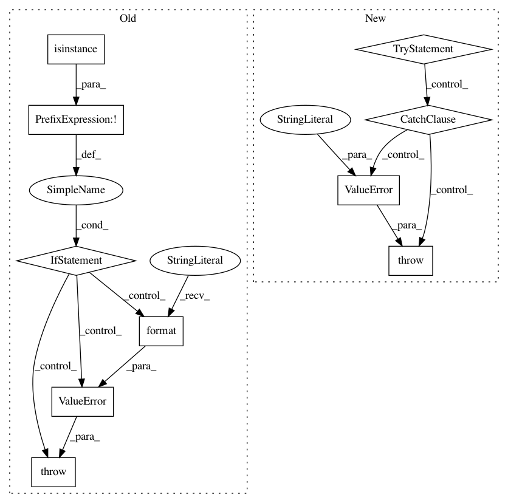

741108695943be12c93ff96a3cb964ddcbeb1563,pyro/infer/reparam/neutra.py,NeuTraReparam,__call__,#NeuTraReparam#Any#Any#Any#,58
Before Change
// Sample a shared latent.
// TODO(fehiepsi) Consider adding a method to extract transform from an Auto*Normal(posterior).
posterior = self.guide.get_posterior()
if not isinstance(posterior, dist.TransformedDistribution):
raise ValueError("NeuTraReparam only supports guides whose posteriors are "
"TransformedDistributions but got a posterior of type {}"
.format(type(posterior)))
self.transform = dist.transforms.ComposeTransform(posterior.transforms)
z_unconstrained = pyro.sample("{}_shared_latent".format(name),
posterior.base_dist.mask(False))
After Change
log_density = 0.
if not self.x_unconstrained: // On first sample site.
// Sample a shared latent.
try:
self.transform = self.guide.get_transform()
except (NotImplementedError, TypeError):
raise ValueError("NeuTraReparam only supports guides that implement "
"`get_transform` method that does not depend on the "
"model"s `*args, **kwargs`")
z_unconstrained = pyro.sample("{}_shared_latent".format(name),
self.guide.get_base_dist().mask(False))
// Differentiably transform.
In pattern: SUPERPATTERN
Frequency: 3
Non-data size: 10
Instances
Project Name: uber/pyro
Commit Name: 741108695943be12c93ff96a3cb964ddcbeb1563
Time: 2020-02-10
Author: npradhan@uber.com
File Name: pyro/infer/reparam/neutra.py
Class Name: NeuTraReparam
Method Name: __call__
Project Name: prody/ProDy
Commit Name: e93f4d4dcd70fc3eaf87779fc9f0b34f98e04ac8
Time: 2012-10-17
Author: lordnapi@gmail.com
File Name: lib/prody/utilities/pathtools.py
Class Name:
Method Name: gunzip
Project Name: GPflow/GPflow
Commit Name: baf110d82f60c51a5680e728cd3c5c6d3536117d
Time: 2017-09-24
Author: art.art.v@gmail.com
File Name: gpflow/params.py
Class Name: ParamList
Method Name: __init__